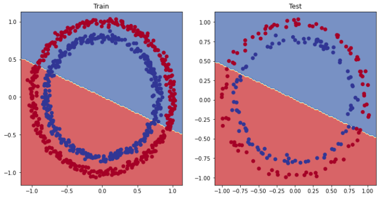

2、模型
1.二分类模型
这里以一个两列预测一列为例子
# 1. Construct a model class that subclasses nn.Module
class CircleModelV0(nn.Module):
def __init__(self):
super().__init__()
# 2. Create 2 nn.Linear layers capable of handling X and y input and output shapes
self.layer_1 = nn.Linear(in_features=2, out_features=5) # takes in 2 features (X), produces 5 features
self.layer_2 = nn.Linear(in_features=5, out_features=1) # takes in 5 features, produces 1 feature (y)
# 3. Define a forward method containing the forward pass computation
def forward(self, x):
# Return the output of layer_2, a single feature, the same shape as y
return self.layer_2(self.layer_1(x)) # computation goes through layer_1 first then the output of layer_1 goes through layer_2
# 4. Create an instance of the model and send it to target device
model_0 = CircleModelV0().to(device)
model_0
（1）优化例如加入多个层
class CircleModelV1(nn.Module):
def __init__(self):
super().__init__()
self.layer_1 = nn.Linear(in_features=2, out_features=10)
self.layer_2 = nn.Linear(in_features=10, out_features=10) # extra layer
self.layer_3 = nn.Linear(in_features=10, out_features=1)
def forward(self, x): # note: always make sure forward is spelt correctly!
# Creating a model like this is the same as below, though below
# generally benefits from speedups where possible.
# z = self.layer_1(x)
# z = self.layer_2(z)
# z = self.layer_3(z)
# return z
return self.layer_3(self.layer_2(self.layer_1(x)))
model_1 = CircleModelV1().to(device)
model_1
（2）训练过程
torch.manual_seed(42)
# Create a loss function
# loss_fn = nn.BCELoss() # BCELoss = no sigmoid built-in
loss_fn = nn.BCEWithLogitsLoss() # BCEWithLogitsLoss = sigmoid built-in
# Create an optimizer
optimizer = torch.optim.SGD(params=model_0.parameters(),
lr=0.1)
epochs = 1000 # Train for longer
# Put data to target device
X_train, y_train = X_train.to(device), y_train.to(device)
X_test, y_test = X_test.to(device), y_test.to(device)
for epoch in range(epochs):
### Training
# 1. Forward pass
y_logits = model_1(X_train).squeeze()
y_pred = torch.round(torch.sigmoid(y_logits)) # logits -> predicition probabilities -> prediction labels
# 2. Calculate loss/accuracy
loss = loss_fn(y_logits, y_train)
acc = accuracy_fn(y_true=y_train,
y_pred=y_pred)
# 3. Optimizer zero grad
optimizer.zero_grad()
# 4. Loss backwards
loss.backward()
# 5. Optimizer step
optimizer.step()
### Testing
model_1.eval()
with torch.inference_mode():
# 1. Forward pass
test_logits = model_1(X_test).squeeze()
test_pred = torch.round(torch.sigmoid(test_logits))
# 2. Caculate loss/accuracy
test_loss = loss_fn(test_logits,
y_test)
test_acc = accuracy_fn(y_true=y_test,
y_pred=test_pred)
# Print out what's happening every 10 epochs
if epoch % 100 == 0:
print(f"Epoch: {epoch} | Loss: {loss:.5f}, Accuracy: {acc:.2f}% | Test loss: {test_loss:.5f}, Test acc: {test_acc:.2f}%")
（3）Sequential可以快速生成
# Same architecture as model_1 (but using nn.Sequential)
model_2 = nn.Sequential(
nn.Linear(in_features=1, out_features=10),
nn.Linear(in_features=10, out_features=10),
nn.Linear(in_features=10, out_features=1)
).to(device)
model_2
（4）优化非线性激活函数的ReLU示范
PyTorch 有一堆现成的非线性激活函数，它们可以做类似但不同的事情。
最常见和性能最好的之一是 [ReLU]( https://en.wikipedia.org/wiki/Rectifier_(neural_networks ) （修正线性单元，torch.nn.ReLU()）。
# Build model with non-linear activation function
from torch import nn
class CircleModelV2(nn.Module):
def __init__(self):
super().__init__()
self.layer_1 = nn.Linear(in_features=2, out_features=10)
self.layer_2 = nn.Linear(in_features=10, out_features=10)
self.layer_3 = nn.Linear(in_features=10, out_features=1)
self.relu = nn.ReLU() # <- add in ReLU activation function
# Can also put sigmoid in the model
# This would mean you don't need to use it on the predictions
# self.sigmoid = nn.Sigmoid()
def forward(self, x):
# Intersperse the ReLU activation function between layers
return self.layer_3(self.relu(self.layer_2(self.relu(self.layer_1(x)))))
model_3 = CircleModelV2().to(device)
print(model_3)
（5）预测
# Make predictions
model_3.eval()
with torch.inference_mode():
y_preds = torch.round(torch.sigmoid(model_3(X_test))).squeeze()
y_preds[:10], y[:10] # want preds in same format as truth labels
2.多分类
多分类模型
from torch import nn
# Build model
class BlobModel(nn.Module):
def __init__(self, input_features, output_features, hidden_units=8):
"""Initializes all required hyperparameters for a multi-class classification model.
Args:
input_features (int): Number of input features to the model.
out_features (int): Number of output features of the model
(how many classes there are).
hidden_units (int): Number of hidden units between layers, default 8.
"""
super().__init__()
self.linear_layer_stack = nn.Sequential(
nn.Linear(in_features=input_features, out_features=hidden_units),
# nn.ReLU(), # <- does our dataset require non-linear layers? (try uncommenting and see if the results change)
nn.Linear(in_features=hidden_units, out_features=hidden_units),
# nn.ReLU(), # <- does our dataset require non-linear layers? (try uncommenting and see if the results change)
nn.Linear(in_features=hidden_units, out_features=output_features), # how many classes are there?
)
def forward(self, x):
return self.linear_layer_stack(x)
# Create an instance of BlobModel and send it to the target device
model_4 = BlobModel(input_features=NUM_FEATURES,
output_features=NUM_CLASSES,
hidden_units=8).to(device)
model_4
（1）训练
# Fit the model
torch.manual_seed(42)
# Set number of epochs
epochs = 100
# Put data to target device
X_blob_train, y_blob_train = X_blob_train.to(device), y_blob_train.to(device)
X_blob_test, y_blob_test = X_blob_test.to(device), y_blob_test.to(device)
for epoch in range(epochs):
### Training
model_4.train()
# 1. Forward pass
y_logits = model_4(X_blob_train) # model outputs raw logits
y_pred = torch.softmax(y_logits, dim=1).argmax(dim=1) # go from logits -> prediction probabilities -> prediction labels
# print(y_logits)
# 2. Calculate loss and accuracy
loss = loss_fn(y_logits, y_blob_train)
acc = accuracy_fn(y_true=y_blob_train,
y_pred=y_pred)
# 3. Optimizer zero grad
optimizer.zero_grad()
# 4. Loss backwards
loss.backward()
# 5. Optimizer step
optimizer.step()
### Testing
model_4.eval()
with torch.inference_mode():
# 1. Forward pass
test_logits = model_4(X_blob_test)
test_pred = torch.softmax(test_logits, dim=1).argmax(dim=1)
# 2. Calculate test loss and accuracy
test_loss = loss_fn(test_logits, y_blob_test)
test_acc = accuracy_fn(y_true=y_blob_test,
y_pred=test_pred)
# Print out what's happening
if epoch % 10 == 0:
print(f"Epoch: {epoch} | Loss: {loss:.5f}, Acc: {acc:.2f}% | Test Loss: {test_loss:.5f}, Test Acc: {test_acc:.2f}%")
二、评估
1pytorch 有两种二元交叉熵实现：
torch.nn.BCELoss()- 创建一个损失函数，用于测量目标（标签）和输入（特征）之间的二元交叉熵。torch.nn.BCEWithLogitsLoss()- 这与上面相同，只是它有一个nn.Sigmoid内置的 sigmoid 层 ( )（我们很快就会看到这意味着什么）。
# Create a loss function
# loss_fn = nn.BCELoss() # BCELoss = no sigmoid built-in
loss_fn = nn.BCEWithLogitsLoss() # BCEWithLogitsLoss = sigmoid built-in
# Create an optimizer
optimizer = torch.optim.SGD(params=model_0.parameters(),
lr=0.1)
2.多元损失函数
# Create loss and optimizer
loss_fn = nn.CrossEntropyLoss()
optimizer = torch.optim.SGD(model_4.parameters(),
lr=0.1) # exercise: try changing the learning rate here and seeing what happens to the model's performance
2.Calculate accuracy (a classification metric)
def accuracy_fn(y_true, y_pred):
correct = torch.eq(y_true, y_pred).sum().item() # torch.eq() calculates where two tensors are equal
acc = (correct / len(y_pred)) * 100
return acc
3.分类指标
| 指标 | 描述 | 链接 |
|---|---|---|
| Accuracy | Out of 100 predictions, how many does your model get correct? E.g. 95% accuracy means it gets 95/100 predictions correct. | torchmetrics.Accuracy() or sklearn.metrics.accuracy_score() |
| Precision | Proportion of true positives over total number of samples. Higher precision leads to less false positives (model predicts 1 when it should've been 0). | torchmetrics.Precision() or sklearn.metrics.precision_score() |
| Recall | Proportion of true positives over total number of true positives and false negatives (model predicts 0 when it should've been 1). Higher recall leads to less false negatives. | torchmetrics.Recall() or sklearn.metrics.recall_score() |
| F1-score | Combines precision and recall into one metric. 1 is best, 0 is worst. | torchmetrics.F1Score() or sklearn.metrics.f1_score() |
| Confusion matrix | Compares the predicted values with the true values in a tabular way, if 100% correct, all values in the matrix will be top left to bottom right (diagnol line). | torchmetrics.ConfusionMatrix or sklearn.metrics.plot_confusion_matrix() |
| Classification report | Collection of some of the main classification metrics such as precision, recall and f1-score. | sklearn.metrics.classification_report()Accuracy |
示范
try:
from torchmetrics import Accuracy
except:
!pip install torchmetrics==0.9.3 # this is the version we're using in this notebook (later versions exist here: https://torchmetrics.readthedocs.io/en/stable/generated/CHANGELOG.html#changelog)
from torchmetrics import Accuracy
# Setup metric and make sure it's on the target device
torchmetrics_accuracy = Accuracy(task='multiclass', num_classes=4).to(device)
# Calculate accuracy
torchmetrics_accuracy(y_preds, y_blob_test)
三、模型的输出
1.logits
Logits 解释为模型的未标准化（或尚未标准化）预测（或输出） 。*这些可以给出结果，但我们通常不会停止于 logits，因为解释它们的原始值并不容易。查看它们的定义以帮助理解logits是如何产生的。
# 查看测试数据前向传播的前 5 个输出
y_logits = model_0(X_test.to(device))[:5]
y_logits
2.对 logits 进行标准化
（1）softmax
使用softmax，其中所有结果总和为1，因此我们可以将它们视为概率：
# 对模型 logits 使用 sigmoid
y_pred_probs = torch.sigmoid(y_logits)
y_pred_probs
对 sigmoid 激活函数的输出进行舍入
- 如果
y_pred_probs>= 0.5，y=1（1 级） - 如果
y_pred_probs< 0.5，y=0（0 级）
# 找到预测标签（围绕预测概率）
y_preds = torch . round ( y_pred_probs )
（2）argmax 多分类
# 将预测的 logits 转换为预测概率
y_pred_probs = torch . softmax ( y_logits , dim = 1 )
# 将预测概率转换为预测标签
y_preds = y_pred_probs . argmax ( dim = 1 )
3.训练效果
（1）plot_decision_boundary()
它包含一个有用的函数，名为plot_decision_boundary()，它创建一个 NumPy 网格来直观地绘制我们的模型预测某些类的不同点。
import requests
from pathlib import Path
# Download helper functions from Learn PyTorch repo (if not already downloaded)
if Path("helper_functions.py").is_file():
print("helper_functions.py already exists, skipping download")
else:
print("Downloading helper_functions.py")
request = requests.get("https://raw.githubusercontent.com/mrdbourke/pytorch-deep-learning/main/helper_functions.py")
with open("helper_functions.py", "wb") as f:
f.write(request.content)
from helper_functions import plot_predictions, plot_decision_boundary
# Plot decision boundaries for training and test sets
plt.figure(figsize=(12, 6))
plt.subplot(1, 2, 1)
plt.title("Train")
plot_decision_boundary(model_0, X_train, y_train)
plt.subplot(1, 2, 2)
plt.title("Test")
plot_decision_boundary(model_0, X_test, y_test)
